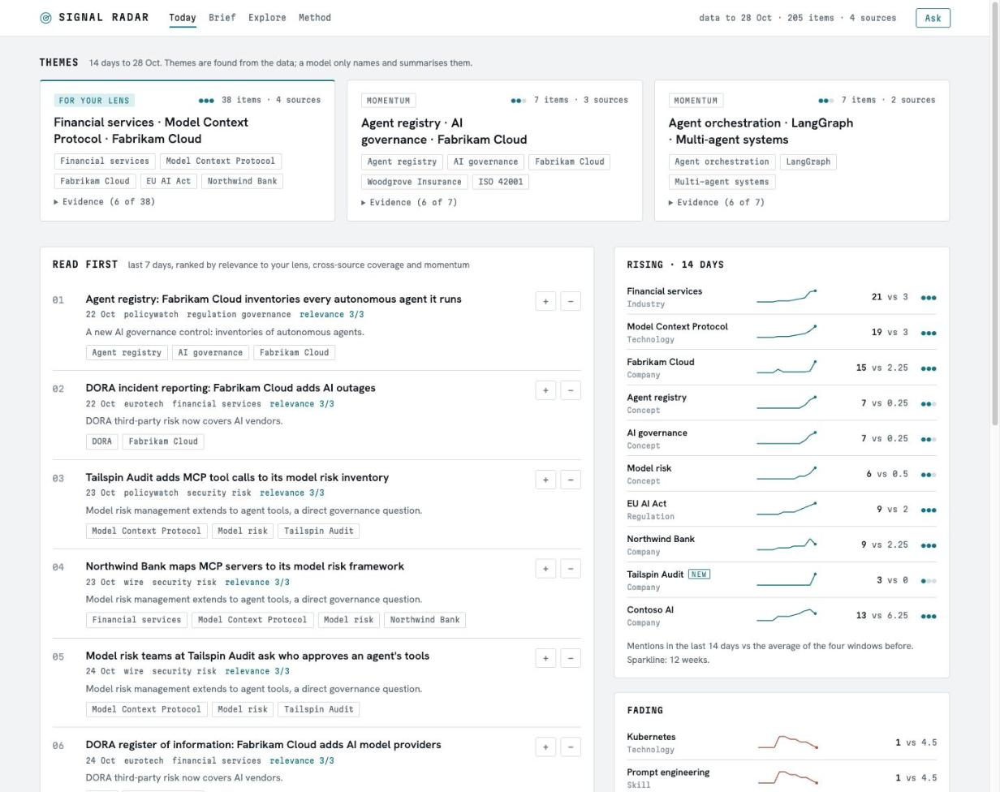
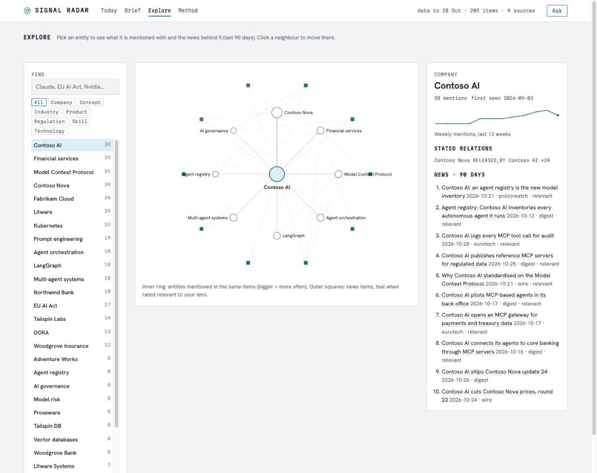
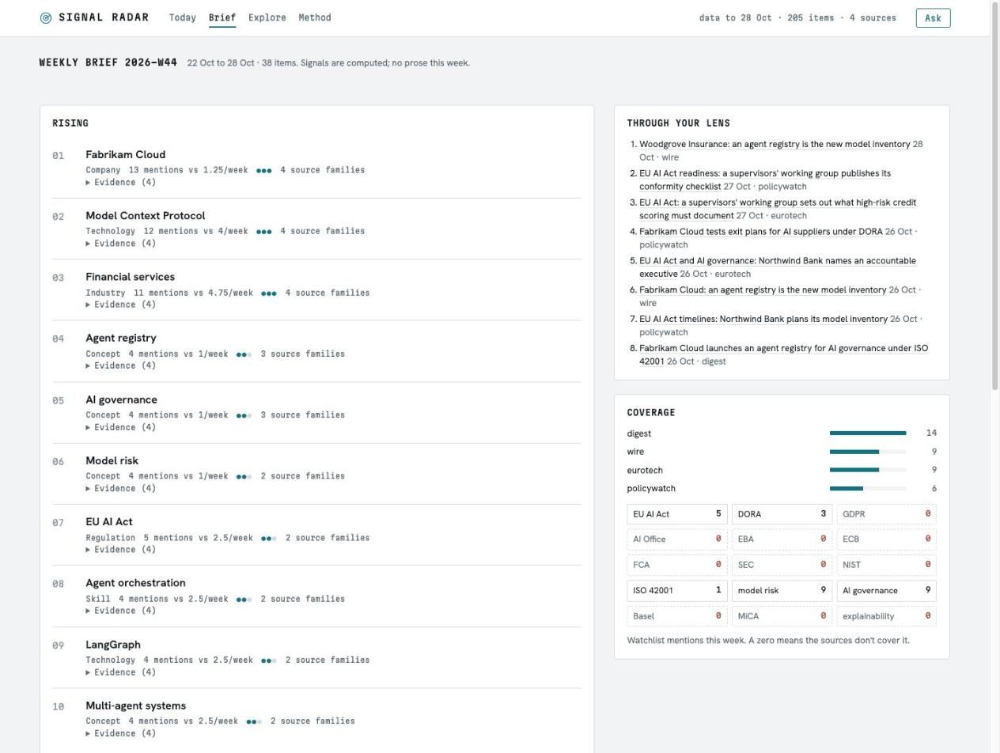

Open source · local first · personal use
Turn your AI news intake into signals you can act on.
Signal Radar reads the newsletters and feeds you already follow, builds a knowledge graph and a time-series signal store from them, and tells you what is gaining momentum, what is new, what is fading, and what that means for your work. Every signal carries its evidence and a confidence level.
What it answers
Six questions, every week, from your own sources
Not a news reader. An instrument that counts, compares and explains, and shows you the articles behind every number.
What is gaining momentum?
Entities whose weekly mentions outrun their own baseline, confirmed by independent source families.
What just appeared?
First-seen entities and pairs of entities that start turning up in the same stories: clusters forming.
What is losing attention?
Topics dropping below their trend, so you stop investing time in yesterday's conversation.
What matters to me?
Each item is scored against a reader profile you write in plain text. The default lens: financial services, risk and the EU AI Act.
What should I learn?
Skills rising across sources, ranked by momentum and fit, each with one concrete learning project.
What should I create?
Product, service and content ideas, each tied to the signals and articles that justify it.
Architecture
One pipeline, every stage inspectable
Each stage writes plain files or SQLite you can open, diff and rebuild. The corpus is the source of truth; everything to its right is derived. A default install runs the solid parts; the dashed ones are optional tiers.
Components
What is inside
Each component sits behind a small interface and has its design decision written down.
MCP server
signal_radar/mcp_server.pyBuilt on the official Python mcp SDK 2.x, stdio transport. Typed inputs, docstrings written for the model, structured JSON out.
- Tools:
top_movers,trend_metrics,emerging_clusters,reading_list,semantic_search,run_ingest,subscribe_sourceand more - Resources:
corpus://items/{id},corpus://digest/{date} - Prompts:
weekly_signal_brief,learning_radar,content_ideas
Source adapters
signal_radar/sources/One interface, fetch(since) → list[Item]. Subscribing to a feed or newsletter is a config entry, not a code change.
- Gmail over IMAP, read-only, app password in the OS keychain
- Microsoft 365 over Graph, delegated
Mail.Read, device-code sign-in - RSS/Atom with per-feed cleanup rules; web-archive backfill
- Parsers for TL;DR, AlphaSignal and Bay Area Letters
LLM router
signal_radar/llm.pyEvery model call goes through one router that reads config/models.yaml. No model name lives anywhere else.
- Roles: extraction, reasoning, writing, embedding; override per run with
--model role=provider/model - Local (Ollama, LM Studio, llama.cpp, vLLM) or cloud (Anthropic, OpenAI, OpenRouter), chosen per role; ranked fallbacks
cheapest_passing: the cheapest model that met a quality bar on your own evals- Monthly budget cap; every call logged with tokens, cost and input hash
Extraction and ontology
signal_radar/extract.pyA local model reads each item once and returns schema-checked JSON. Resumable, cached by input hash, re-run when the taxonomy changes.
- 8 entity types, 7 relation types, editable in
config/taxonomy.yaml - Relevance 0 to 3 against your written lens, calibrated so most news scores low
- Alias table folds "GPT-5" and "gpt5" into one entity
Signal store
signal_radar/signals.pyA SQLite sidecar for the time-series maths a graph does not do: weekly mentions, velocity, novelty and co-occurrence growth.
- Confidence from volume and independent source families, not one loud newsletter
- Fully rebuildable from corpus plus extractions, no LLM calls
- Watchlist blind spots: a zero means your sources miss it
Knowledge graph and vector search Optional
graph_export.py · vectors.pyAn optional tier. Documents and entities go into a Graqle graph file, optionally mirrored into Neo4j for queries, story clusters and lens links. Without it, Explore and clusters come from the signal store.
- Neo4j sync with a restricted user and a delete-fraction guard
- In-process ONNX embeddings, cached by text hash, bounded per run
- With vectors on, Ask is hybrid: keyword plus vector, merged by reciprocal rank fusion
Console and static site
signal_radar/site/Static-first: JSON data files plus templates. The local console adds Ask and feedback on top of the same pages.
- Today: lens themes, ranked reading list, rising and fading with sparklines
- Explore: radial ego graph per entity with its news
- Method: every number on the page explained
Evaluation, brief and operations
evals.py · brief.py · schedule.pyModels are compared on this project's own tasks before they are trusted, and the jobs run unattended.
- LLM-as-judge plus blind human grading sheets
- Weekly brief: signals computed in code, a model writes only the prose, uncited ids removed
- launchd scheduling with catch-up after sleep; optional publishing behind Cloudflare Access
The console
An instrument, not a dashboard
Screens from the bundled demo: synthetic news about fictional companies, generated by scripts/demo.py. Click through the live version.



Design principles
Decisions that shape every component
Evidence or it did not happen
Every signal links to the items behind it. Generated text cites ids; invented ids are stripped. Thin evidence is labelled thin.
Code computes, models narrate
Counts, velocity and clusters come from SQL. Models classify and write, never decide what is rising.
Local first
Runs on a laptop with a local model by default. Cloud models are your choice per job, capped and logged.
Models are swappable
Roles, not model names. Change provider in one YAML file and re-run the evals.
Respect publishers
Store summaries and links, never full articles. Sources whose terms forbid sharing stay out of any public edition.
Write the decision down
18 ADRs record context, options, the choice and its consequences, including the gaps.
Quickstart
Try it in two minutes
The demo needs Python 3.11+ and nothing else: no mailbox, no API key, no model.
# get the code git clone https://github.com/jpshetty-ai/signal-radar-community cd signal-radar-community python3 -m venv .venv && source .venv/bin/activate pip install -e '.[mcp,web,dev]' # synthetic demo, opens on http://127.0.0.1:8765 python scripts/demo.py --serve
Your own radar
Point it at your sources
Public EU tech and policy feeds are on by default. Add newsletters and your own lens when you are ready.
# a model: local by default, or set a cloud # model per role in config/models.yaml ollama pull qwen3:8b # fetch, extract, score, build the console signal-radar daily signal-radar web # use it from Claude claude mcp add signal-sources -- .venv/bin/signal-sources-mcp
Built with